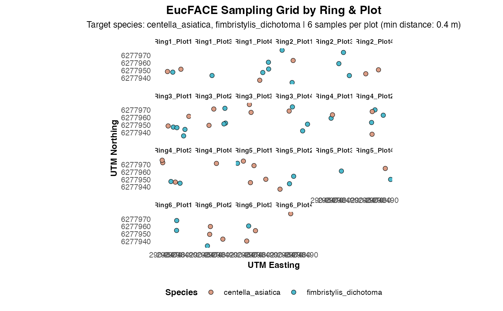

generate_sampling_points.RdThis function selects spatially distributed and photosynthetically balanced samples from EucFACE vegetation data. It performs distance-constrained random sampling, ensuring each plot gets an equal number of C3 and C4 species, and computes spatial autocorrelation using Moran's I. Output includes plots, maps, and optionally a CSV file.
generate_sampling_points(
gps_ref,
samples_per_plot = 6,
min_distance = 0.4,
target_species = NULL,
export_csv = FALSE,
filename = "eucface_samples.csv",
color_palette = NULL
)A data frame with columns: Ring, Plot, Latitude, Longitude, Species, and Photosynthetic_Pathway.
Number of samples to select per plot (default: 6).
Minimum allowed distance (in meters) between samples (default: 0.4).
Optional character vector of species names to filter (e.g., c("centella_asiatica")).
Logical. If TRUE, exports sampled data to CSV (default: FALSE).
Output filename for CSV if export_csv = TRUE (default: "eucface_samples.csv").
Optional named vector of colors to use for species. If NULL, a default palette is generated.
A list with:
A data.frame of sampled observations.
A ggplot2 object showing faceted sampling layout.
A leaflet map with sampling points.
A list of Moran's I test results per plot.
Assumes the input coordinate reference system is WGS84 (EPSG:4326) and transforms to UTM zone 56S (EPSG:32756). Each plot is sampled to obtain half C3 and half C4 species, if available.
data(synthetic_gps)
result <- generate_sampling_points(
gps_ref = synthetic_gps,
samples_per_plot = 6,
min_distance = 0.4,
target_species = c("centella_asiatica", "fimbristylis_dichotoma")
)
#> Warning: Insufficient C3 or C4 species in plot. Sampling without stratification.
#> Warning: Insufficient C3 or C4 species in plot. Sampling without stratification.
#> Warning: Insufficient C3 or C4 species in plot. Sampling without stratification.
#> Warning: Insufficient C3 or C4 species in plot. Sampling without stratification.
#> Warning: Insufficient C3 or C4 species in plot. Sampling without stratification.
#> Warning: Insufficient C3 or C4 species in plot. Sampling without stratification.
#> Warning: Insufficient C3 or C4 species in plot. Sampling without stratification.
#> Warning: Insufficient C3 or C4 species in plot. Sampling without stratification.
#> Warning: Insufficient C3 or C4 species in plot. Sampling without stratification.
#> Warning: Insufficient C3 or C4 species in plot. Sampling without stratification.
#> Warning: Insufficient C3 or C4 species in plot. Sampling without stratification.
#> Warning: Insufficient C3 or C4 species in plot. Sampling without stratification.
#> Warning: Insufficient C3 or C4 species in plot. Sampling without stratification.
#> Warning: Insufficient C3 or C4 species in plot. Sampling without stratification.
#> Warning: Insufficient C3 or C4 species in plot. Sampling without stratification.
#> Warning: Insufficient C3 or C4 species in plot. Sampling without stratification.
#> Warning: Insufficient C3 or C4 species in plot. Sampling without stratification.
#> Warning: Insufficient C3 or C4 species in plot. Sampling without stratification.
#> Warning: Insufficient C3 or C4 species in plot. Sampling without stratification.
#> Warning: Insufficient C3 or C4 species in plot. Sampling without stratification.
#> Warning: Insufficient C3 or C4 species in plot. Sampling without stratification.
#> Warning: Insufficient C3 or C4 species in plot. Sampling without stratification.
#> Warning: neighbour object has 19 sub-graphs
#> Warning: Kurtosis overflow,
#> distribution of variable does not meet test assumptions
#> Warning: Negative variance,
#> distribution of variable does not meet test assumptions
#> Warning: NaNs produced
#> Warning: Out-of-range p-value: reconsider test arguments
#> Warning: neighbour object has 15 sub-graphs
#> Warning: neighbour object has 15 sub-graphs
#> Warning: neighbour object has 14 sub-graphs
print(result$plot)

result$map
head(result$samples)
#> # A tibble: 6 × 10
#> Ring Plot Cell Species Photosynthetic_Pathway utm_x utm_y Ring_Plot lon
#> <chr> <chr> <chr> <chr> <chr> <dbl> <dbl> <chr> <dbl>
#> 1 Ring1 Plot1 Cell8 centel… c3 2.90e5 6.28e6 Ring1_Pl… 151.
#> 2 Ring1 Plot1 Cell… centel… c3 2.90e5 6.28e6 Ring1_Pl… 151.
#> 3 Ring1 Plot1 Cell… fimbri… c4 2.90e5 6.28e6 Ring1_Pl… 151.
#> 4 Ring1 Plot3 Cell… fimbri… c4 2.90e5 6.28e6 Ring1_Pl… 151.
#> 5 Ring1 Plot4 Cell2 fimbri… c4 2.90e5 6.28e6 Ring1_Pl… 151.
#> 6 Ring1 Plot4 Cell… fimbri… c4 2.90e5 6.28e6 Ring1_Pl… 151.
#> # ℹ 1 more variable: lat <dbl>